◇発注起案を確認する。
ナビゲーションエリアより「発注」の”一覧”をクリックします。
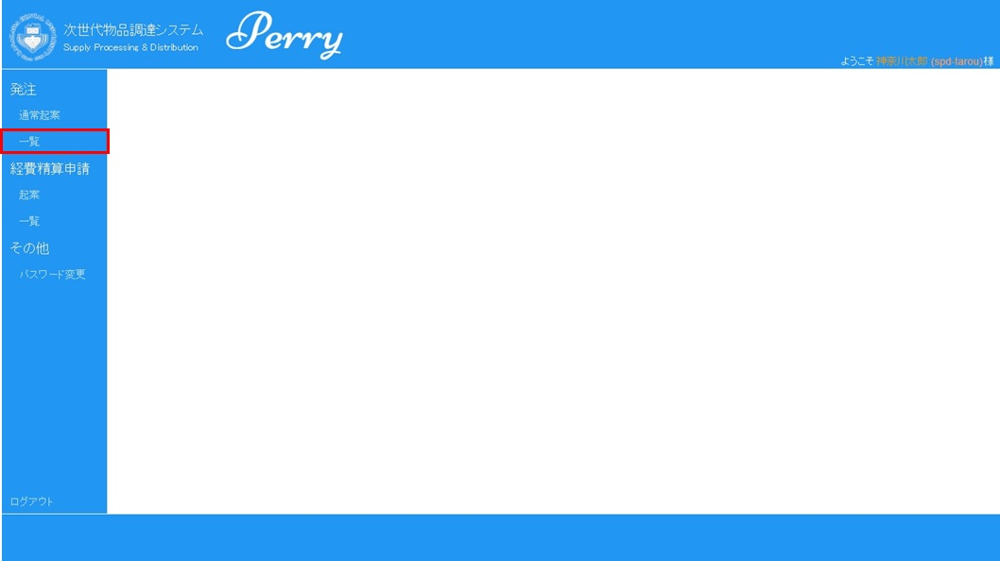
◇発注一覧画面が表示されます。
①検索エリア：初期値は、日付は表示された現在日付、状態は、”依頼中”、”承認済み”にチェックが入っています。日付と状態でデータの絞り込みが可能です。
②発注一覧表示エリア：”検索”をクリックされた場合、検索条件に合致した情報が表示されます。
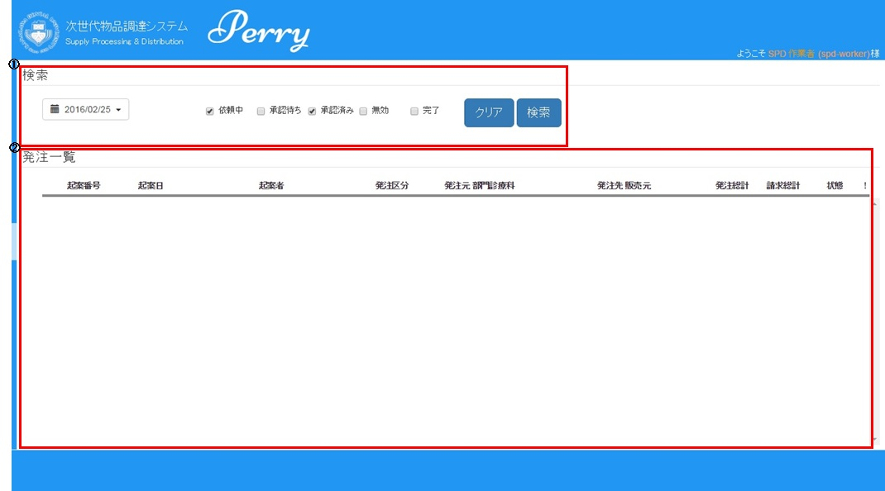
◇検索エリアで表示条件を設定します。
①検索条件を設定して、”検索”をクリックします。検索条件に合致した情報が表示されます。
②”クリア”をクリックすると、検索条件が初期値になります。
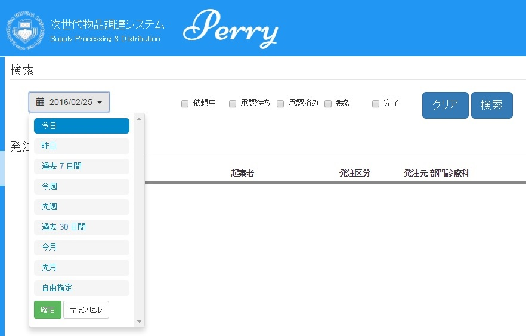
①状態が”依頼中”のレコードの”起案番号”をクリックします。
◇内容を確認し、”提出”をクリックします。
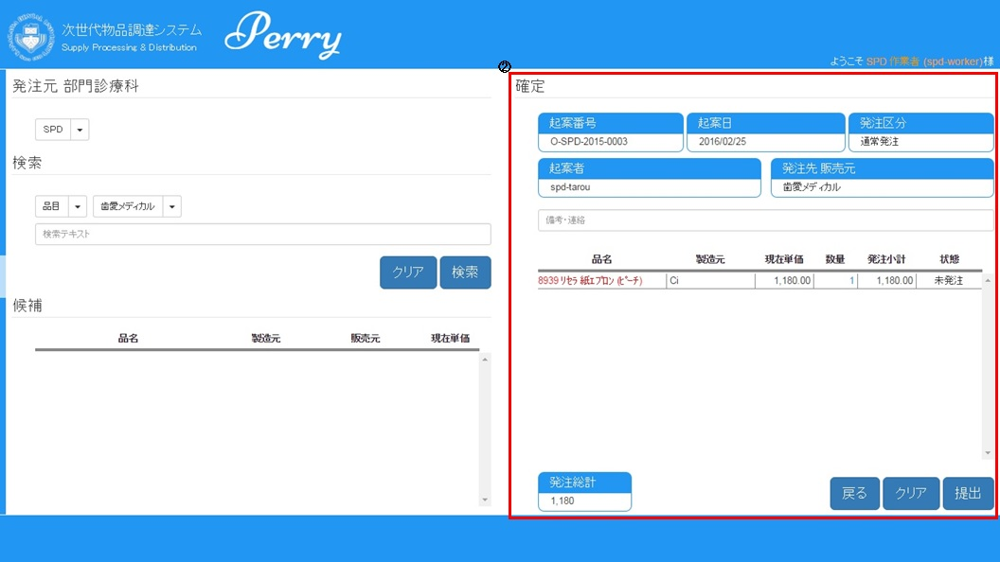
◇発注依頼書が別タブに表示されます。
”印刷”をクリックし、プリンター出力してください。（参考）ブラウザーからのメニューの印刷からも可能です。
（注）印刷は、起動しているブラウザーの印刷環境に依存します。
また、プリンターがない場合には、ファイルに保存し（pdf形式等）、管理するか、別のプリンターがある場所で、保存ファイルを印刷してください。
◇元の画面（タブ「Perry SPD システム」をクリックする）に戻ると、発注一覧画面が表示されています。
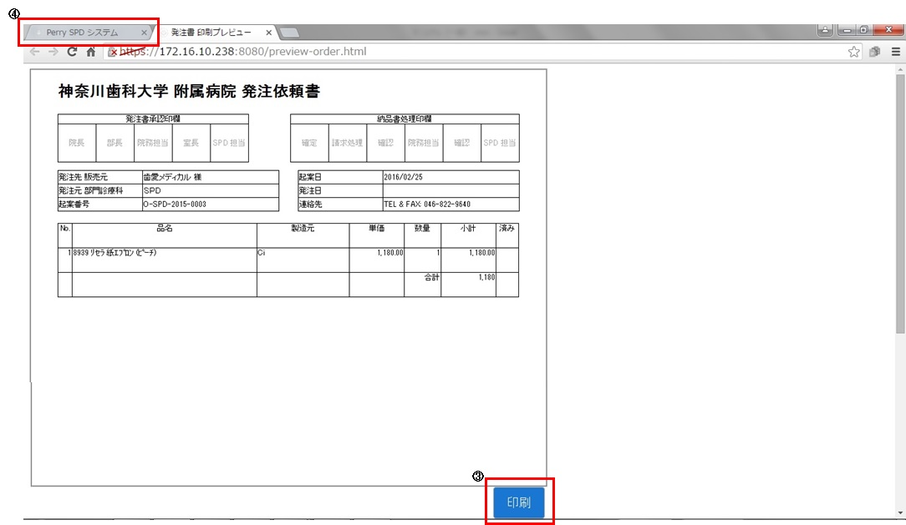
◇⑤状態が変わったか確認したい場合には、”承認済み”をチェックし、”検索”をクリックします。
⑥処理した起案番号の状態が”承認待ち”になっているはずです。
※院長先生の方での処理が完了したら、状態が”承認済み”になるので、SPD作業としては、この後、実際の発注作業になります。
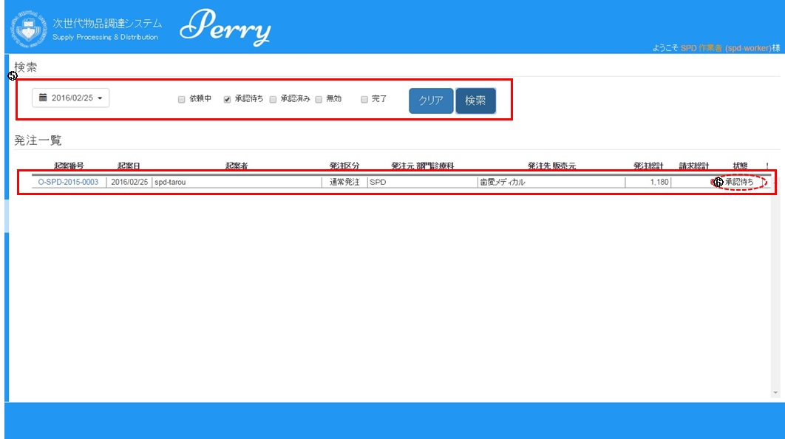
前のページに戻る
①状態が”承認済み”のレコードの”起案番号”をクリックします。
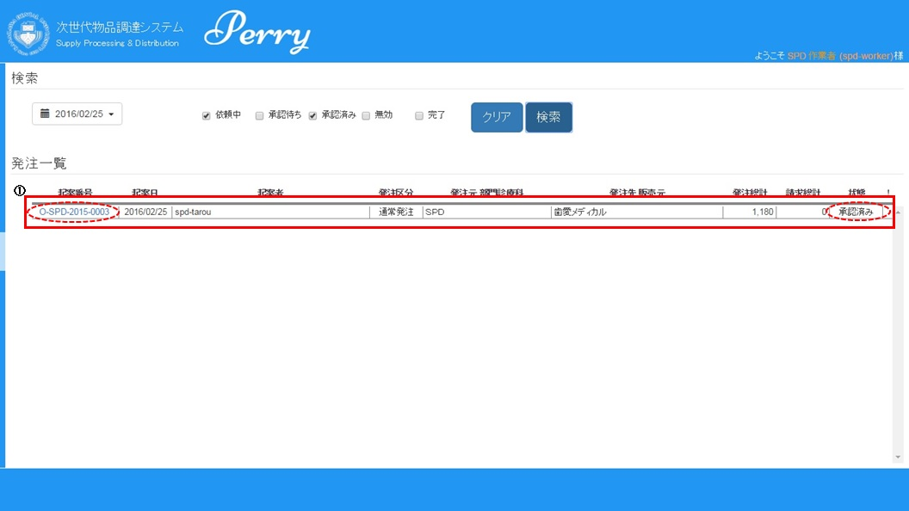
◇②内容を確認します。
・何もしない場合は、”戻る”をクリックしてください。
・内容が宜しくなければ、”依頼中へ戻す”をクリックしてください。 ※承認をもらったが、何らかの理由で、起案者へ戻す場合に選択します。
・内容が宜しければ、”印刷”をクリックしてください。
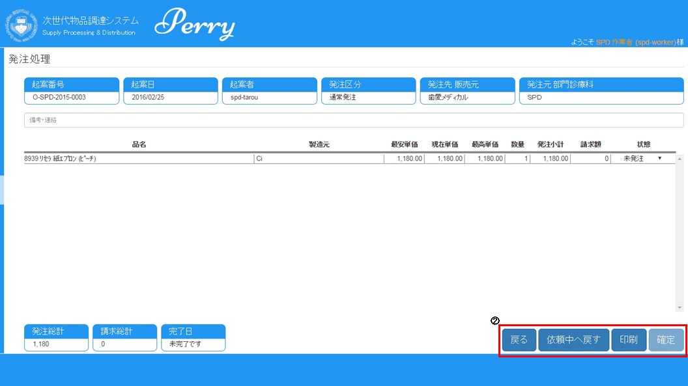
◇③注文書が別タブに表示されます。
”印刷”をクリックし、プリンター出力をする。（参考：ブラウザーからのメニューの印刷からも可能です。）
・何もしない場合は、”戻る”をクリックしてください。
注）印刷は、起動しているブラウザーの印刷環境に依存します。
また、プリンターがない場合には、ファイルに保存し（pdf形式等）、管理するか、別のプリンターがある場所で、保存ファイルを印刷してください。
◇④タブ「Perry SPD システム」をクリックし、元の画面（発注処理）に戻ります。
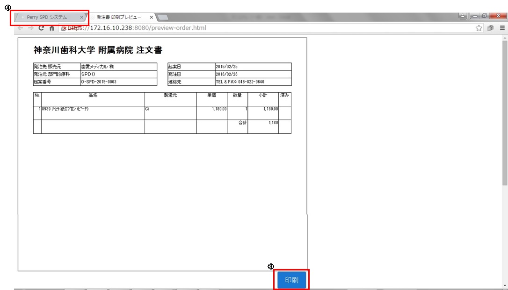
◇⑤状態を”発注済み”にします。 参考：この時点で”確定”ボタンが選択できるようになります。
◇⑥”確定”をクリックします。
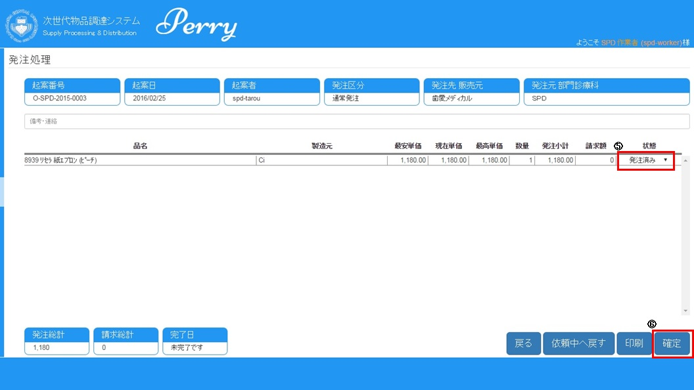
前のページに戻る
①実際に商品が納品された、起案番号を探し（状態が”承認済み”）、そのレコードの”起案番号”をクリックします。
②発注処理画面が表示されたら、該当の品名の「状態」を”納品済み”に変更します。
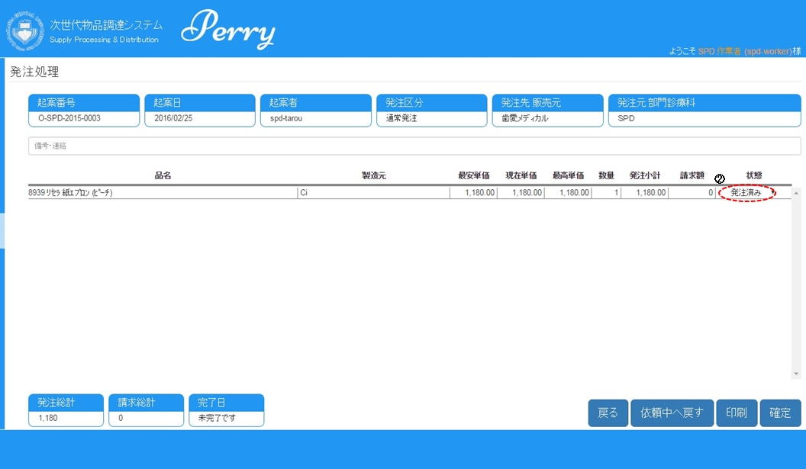
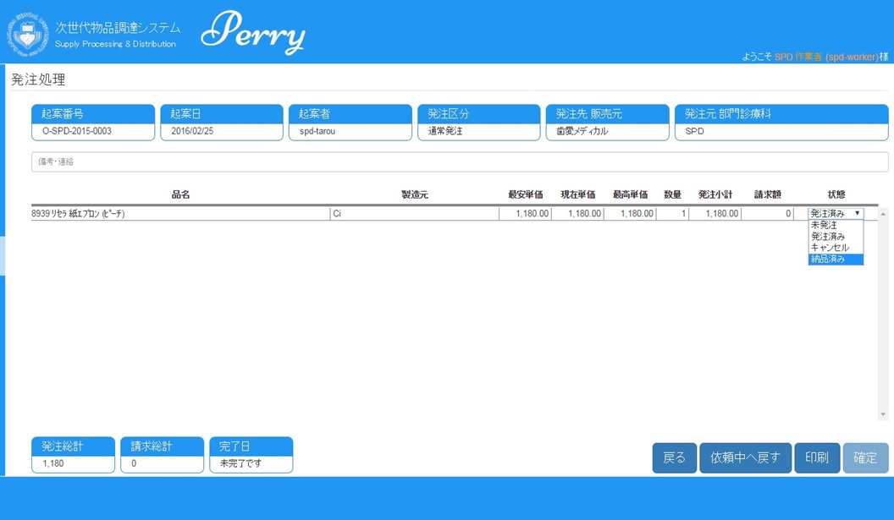
◇③請求額を入力します。（納品書に記載してある金額を半角数値で入力）
参考：請求額を入力した時点で、現在単価が自動的に計算され、反映されます。（現在単価=請求額÷数量）
(注）請求額を入力し忘れた場合、0で登録されます。入力する場合には、状態を”承認待ち”に戻し、請求額を入れてください。
◇④⑤完了日（納品日）が自動的に入力されますので、内容を確認後、”確定”をクリックしてください。
参考：完了日（納品日）の変更が可能です。
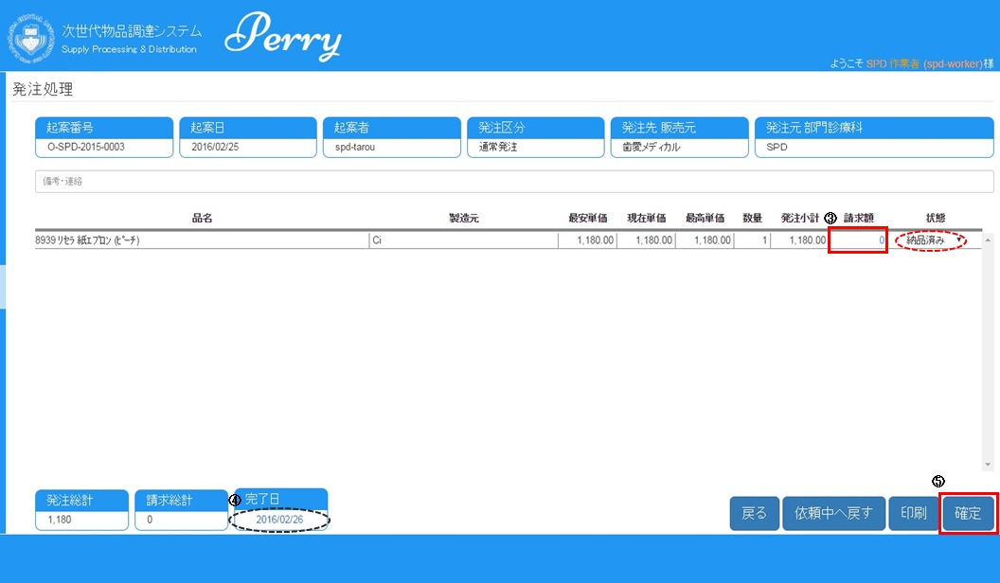
◇⑥発注一覧画面へ戻りますので、状態が変わったか確認したい場合には、”完了”をチェックし、”検索”をクリックします。
⑦処理した起案番号の状態が”完了”になっているはずです。
※この時点で,発注起案に関するワークフローは終了したことになります。
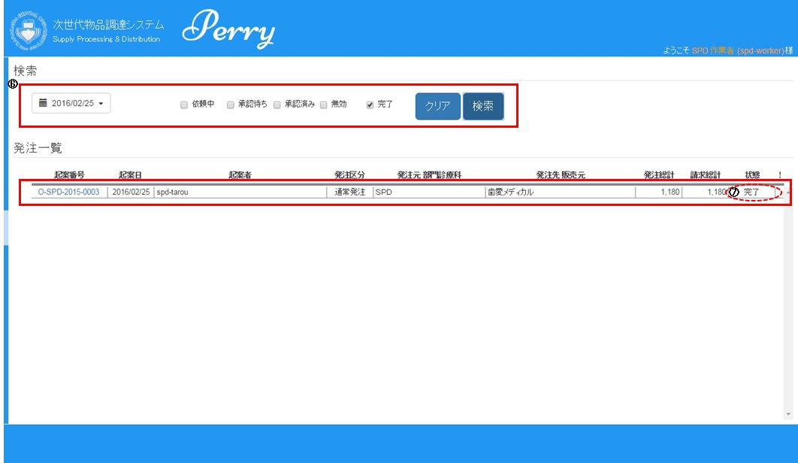
前のページに戻る